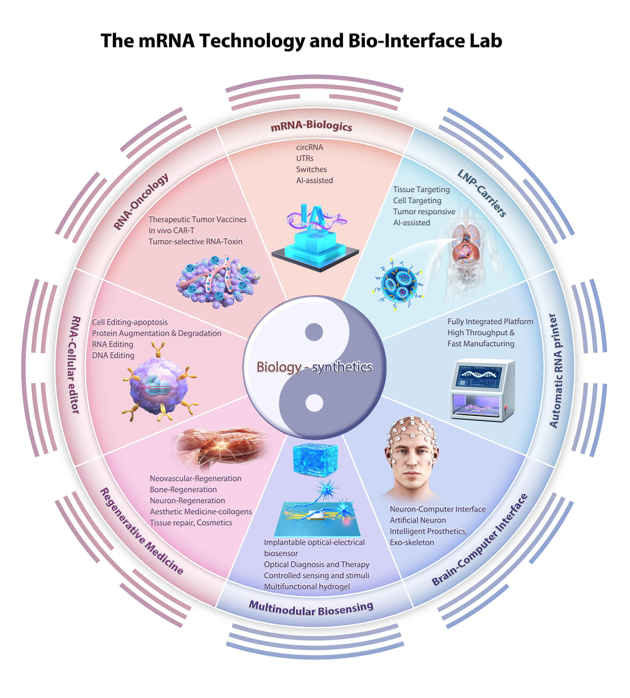

Our lab focuses on advancing mRNA technology and bio-interface research to develop innovative solutions for healthcare and biomedical applications. We integrate cutting-edge approaches in nucleic acid therapeutics, nanobiotechnology, and biomaterials engineering.
Through interdisciplinary collaboration and state-of-the-art facilities, we aim to translate fundamental discoveries into practical applications for disease treatment and diagnosis.
Cell Editing-apoptosis、Protein Augmentation & Degradation、RNA Editing、DNA Editing
Learn moreNeovascular-Regeneration、Bone-Regeneration、Neuron-Regeneration、Aesthetic Medicine-collagens、Tissue repair, Cosmetics
Learn more
Implantable optical-electrical biosensor、Optical Diagnosis and Therapy 、Controlled sensing and stimuli、Multifunctional hydrogel
Learn moreNeuron-Computer Interface 、Artificial Neuron 、Intelligent Prosthetics、Exo-skeleton
Learn more